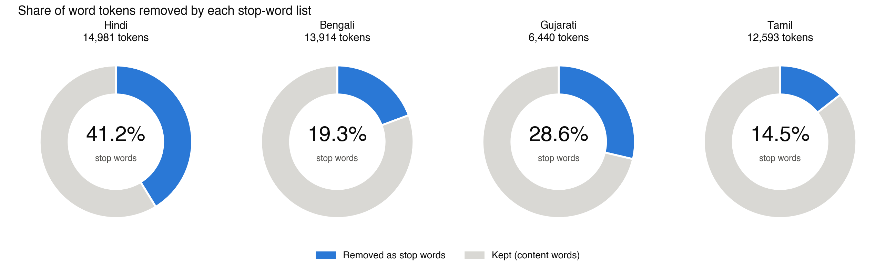
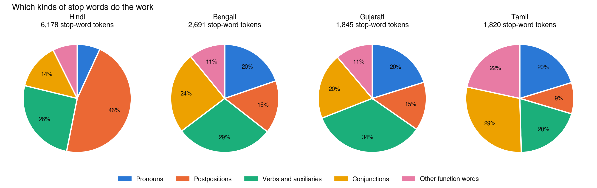
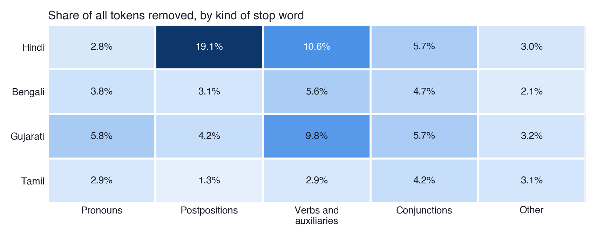
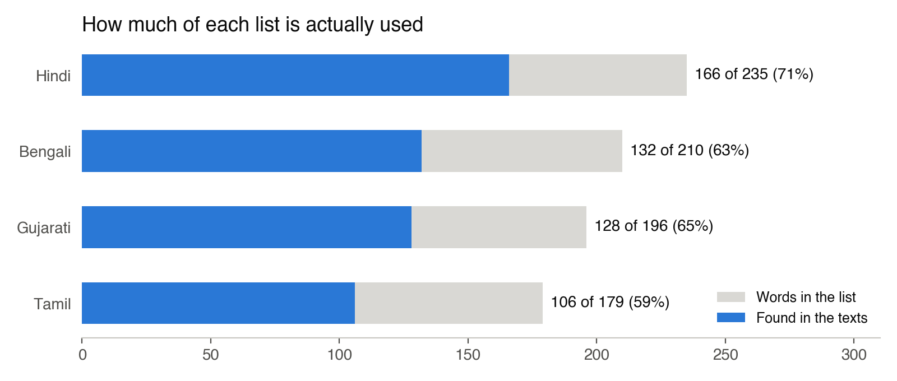

Assignment 05 · additional
Testing the Stop-Word Lists on Real Text
Abstract. An additional assignment extending Assignment 01. I tested my four stop-word lists by running them on real text: the same four Wikipedia articles (India, Rabindranath Tagore, Monsoon and the Ganges) in Hindi, Bengali, Gujarati and Tamil. The Hindi list removes 41.2% of all words, but the Tamil list only 14.5%, because Tamil joins its grammar to the noun.
Results




My interpretation
The lists are about the same size, so I expected them to do about the same work. They did not. In Hindi “of India” is भारत के, two words, and the list removes के. In Tamil it is இந்தியாவின் and in Bengali ভারতের: one word, and nothing to remove. The heatmap shows this in a single row. Postpositions alone remove 19.1% of Hindi but only 1.3% of Tamil.
This changed how I see a step that is usually treated as technical. Stop-word removal assumes that grammar is written as separate words. That suits Hindi and English but not Tamil, which needs a tool that can split words into parts. Tools built around one language quietly work less well for others.
The test also showed what my lists were missing, such as the Hindi passive जाता and Bengali সালে (“in the year”). And about a third of each list never appeared, mostly informal words like तू that an encyclopaedia does not use. The right list depends on the kind of text.
Files
evaluate_stopwords.py: runs the lists on the textsheatmaps.py: the heatmapfindings.md: the full write-upresults/top_words.md: frequency tablestexts/: the 16 articles